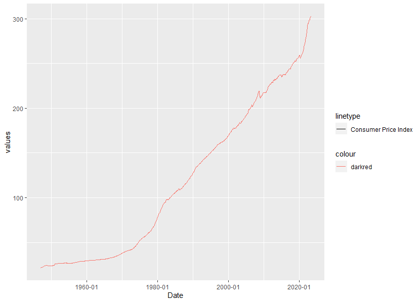

Data Acquisition
1 API Working Frame
1.1 Load libraries
library(httr)
library(jsonlite)
library(tidyverse)
library(lubridate)
library(ggplot2)1.2 Build URLs
In this case I decided to go for some Macroeconimic Data. Consumer Price Index and the Producer Price Index. The URLs were build with the help of a base URL and then glued.
base_url <- "https://www.econdb.com/api/series/"
cpi_url <- "CPIUS"
ppi_url <- "PPIUS"
full_url_cpi <- base::paste0(base_url,cpi_url)
full_url_ppi <- base::paste0(base_url,ppi_url)1.3 Call URLs
Using and specifying the httr library we call our APIs
api_call_cpi <- httr::GET(full_url_cpi)
api_call_ppi <- httr::GET(full_url_ppi)1.4 Create Dataframes
In the Next step we need to create our dataframes. Here we Use the rawtochar first and then the JSON package and lastly the mapdfr function. Finally we erade unnecessary columns and clean our data.
api_cpi_char <- base::rawToChar(api_call_cpi$content)
api_ppi_char <- base::rawToChar(api_call_ppi$content)
api_cpi_JSON <- jsonlite::fromJSON(api_cpi_char, flatten = TRUE)
api_ppi_JSON <- jsonlite::fromJSON(api_ppi_char, flatten = TRUE)
api_cpi_tbl <- api_cpi_JSON %>%
map_dfr( ~ .x %>% as_tibble()) %>%
select(.,-c(value,status,"1:area_code","3:item_code","1220:base_code","GEO:None"))
api_ppi_tbl <- api_ppi_JSON %>%
map_dfr( ~ .x %>% as_tibble())
api_cpi_cleaned_tbl <- api_cpi_tbl[-(1:6),] %>% mutate(Date= as.Date(dates))
api_ppi_cleaned_tbl <- api_ppi_tbl[-(1:6),] %>% mutate(Date= as.Date(dates))1.5 Plot
In the Last step we can plot our data. Since we want a continous line showing the rise in the respective index, we use the geom_line. CPI First:
ggplot(api_cpi_cleaned_tbl, aes(x = Date, y = values, color = "darkred",lty = 'Consumer Price Index')) +
geom_line() +
scale_x_date(date_labels = "%Y-%m")With the corresping result:  And then also PPI:
{kind=link}
ggplot(api_ppi_cleaned_tbl, aes(x = Date, y = values, color="steelblue",lty = 'Produer Price Index')) +
geom_line() +
scale_x_date(date_labels = "%Y-%m"){kind=link}
2 Webscraping
This was really a lot of code, due to some really deeply nested html tags with the rosebike hompage. ## Libraries
library(tidyverse)
library(rvest)
library(xope)
library(jsonlite)
library(glue)
library(stringi)2.1 Collect Product Families of ROSE
Add the url.
url_home <- "https://www.rosebikes.de/fahrräder"Read in the HTML for the entire homepage
html_home <- read_html(url_home)Webscrape the product families from ROSE bikes.
bike_family_tbl <- html_home %>%parent node
html_nodes(".columns") %>%Get the nodes for the families
html_nodes(css = ".catalog-navigation__list-item > a") %>%And extract the information of the title attribute
html_attr('title') %>%Remove the product families Sale, bikefinder und schnell verfügbare Bikes
discard(.p = ~stringr::str_detect(.x,"Sale|Bike Finder|Schnell verfügbare Bikes"))%>%Convert vector to tibble
enframe(name = "position", value ="family_class") %>%
mutate(
family_id = str_glue("#{family_class}")
)
bike_family_tbl2.2 Create product family URLs of Rose
Create bike family url tbl to point at the right nodes
bike_family_url_tbl <- html_home %>%Parent node
html_nodes(".columns") %>%Get the nodes for the families once again
html_nodes(css = ".catalog-navigation__list-item > a") %>%And extract the information of the href attribute for bike urls
html_attr('href') %>%Remove the product families sale, bikefinder und bikes mit kurzer lieferzeit-rennrad
discard(.p = ~stringr::str_detect(.x,"/fahrräder/sale|/bike-finder|/bikes-mit-kurzer-lieferzeit-rennrad"))%>%Convert vector to tibble
enframe(name = "position", value ="subdirectory") %>%
mutate(
url = glue("https://www.rosebikes.de{subdirectory}")
) %>%
Some categories are listed multiple times. We only need unique values
distinct(url)
bike_family_url_tbl2.3 Collect Product categories of ROSE
HTML Tags are deeply neste + JAVA, thus individual bike category data gathering Also many product Families had no further product categories.
Create URLs for the product categories.
url_mtb <- "https://www.rosebikes.de//fahrräder/mtb"
url_rennrad <- "https://www.rosebikes.de/fahrräder/rennrad"
url_ebike <- "https://www.rosebikes.de/fahrräder/e-bike"Finally be able to sort of avoid the deeply nested HTML tags and thus gather the data. Create tibbles for that.
bike_category_mtb_tbl <- read_html(url_mtb) %>%
html_nodes(css = ".catalog-navigation__list-item > a") %>%
html_attr('href') %>%
discard(.p = ~stringr::str_detect(.x,"/fahrräder/mtb$"))%>%
enframe(name = "position", value ="subdirectory") %>%
mutate(url = glue("https://www.rosebikes.de{subdirectory}")) %>%
distinct(url)
bike_category_rennrad_tbl <- read_html(url_rennrad) %>%
html_nodes(css = ".catalog-navigation__list-item > a") %>%
html_attr('href') %>%
discard(.p = ~stringr::str_detect(.x,"/fahrräder/rennrad$"))%>%
enframe(name = "position", value ="subdirectory") %>%
mutate(url = glue("https://www.rosebikes.de{subdirectory}")) %>%
distinct(url)
bike_category_ebike_tbl <- read_html(url_ebike) %>%
html_nodes(css = ".catalog-navigation__list-item > a") %>%
html_attr('href') %>%
discard(.p = ~stringr::str_detect(.x,"/fahrräder/e-bike$"))%>%
enframe(name = "position", value ="subdirectory") %>%
mutate(url = glue("https://www.rosebikes.de{subdirectory}")) %>%
distinct(url)In theory you would need another “rest” tibble from all the product families not having product categories, but since this might interfere with the rest of my code due to the different nature of the path, I will not include the rest in the bike category tibble
bike_category_rest_tbl <- bike_family_url_tbl %>%
filter(!row_number() %in% c(1, 2, 4))
bike_category_tbl <- rbind(bike_category_mtb_tbl,bike_category_rennrad_tbl,bike_category_ebike_tbl)2.4 Collect Bike Data for a single bike
Select first bike for the first category mtb url
bike_category_url <- bike_category_tbl$url[1]Get the URLs for the first bike of the first category
html_bike_category <- read_html(bike_category_url)
bike_url_tbl <- html_bike_category %>%
html_nodes(css = ".align-middle > a") %>%
html_attr('href') %>%
enframe(name = "position", value = "url")Get the description for the first bike of the first category
bike_desc_tbl <- html_bike_category %>%
html_nodes(".catalog-category-bikes__list-item") %>%
html_nodes(".catalog-category-bikes__content-subtitle") %>%
html_text() %>%
enframe(name = "position", value = "description")Stack all lists together
bike_price_tbl <- html_bike_category %>%
html_nodes (css =".catalog-category-bikes__price-title") %>%
html_text() %>%
enframe(name = "position", value = "price")
bike_name_tbl <- html_bike_category %>%
html_nodes (css = ".basic-headline__title") %>%
html_text() %>%
discard(.p = ~stringr::str_detect(.x,"Cross Country|Beratung"))%>%
enframe(name ="position", value ="name")
single_bike_data_tbl <- bike_name_tbl %>%
left_join(bike_price_tbl) %>%
left_join(bike_desc_tbl) %>%
left_join(bike_url_tbl)2.5 Wrap it into a function
Put every single piece into a function
get_bike_data <- function(url) {
html_bike_category <- read_html(url)
#Get the URLs
html_bike_category <- read_html(bike_category_url)
bike_url_tbl <- html_bike_category %>%
html_nodes(css = ".align-middle > a") %>%
html_attr('href') %>%
enframe(name = "position", value = "url")
#Get the descrition
bike_desc_tbl <- html_bike_category %>%
html_nodes(".catalog-category-bikes__list-item") %>%
html_nodes(".catalog-category-bikes__content-subtitle") %>%
html_text() %>%
enframe(name = "position", value = "description")
#Get the price
bike_price_tbl <- html_bike_category %>%
html_nodes (css =".catalog-category-bikes__price-title") %>%
html_text() %>%
enframe(name = "position", value = "price")
#Get the name
bike_name_tbl <- html_bike_category %>%
html_nodes (css = ".basic-headline__title") %>%
html_text() %>%
discard(.p = ~stringr::str_detect(.x,"Cross Country|Beratung"))%>%
enframe(name ="position", value ="name")
#Stick everything together
single_bike_data_tbl <- bike_name_tbl %>%
left_join(bike_price_tbl) %>%
left_join(bike_desc_tbl) %>%
left_join(bike_url_tbl)
}Run for all bike category urls, so we get the data for every bike
bike_data_tbl <- tibble()
# Loop through all urls
for (i in seq_along(bike_category_tbl$url)) {
bike_category_url <- bike_category_tbl$url[i]
bike_data_tbl <- bind_rows(bike_data_tbl, get_bike_data(bike_category_url))
# Wait between each request to reduce the load on the server
# Otherwise we could get blocked
Sys.sleep(5)
# print the progress
print(i)
}Clean the data so we can have a look into the tibble.
bike_data_cleaned_tbl <- bike_data_tbl %>%
na.omit() %>%
select(.,-position)The result is shown below.